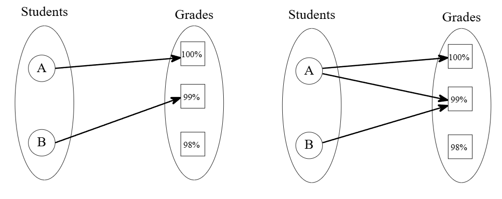
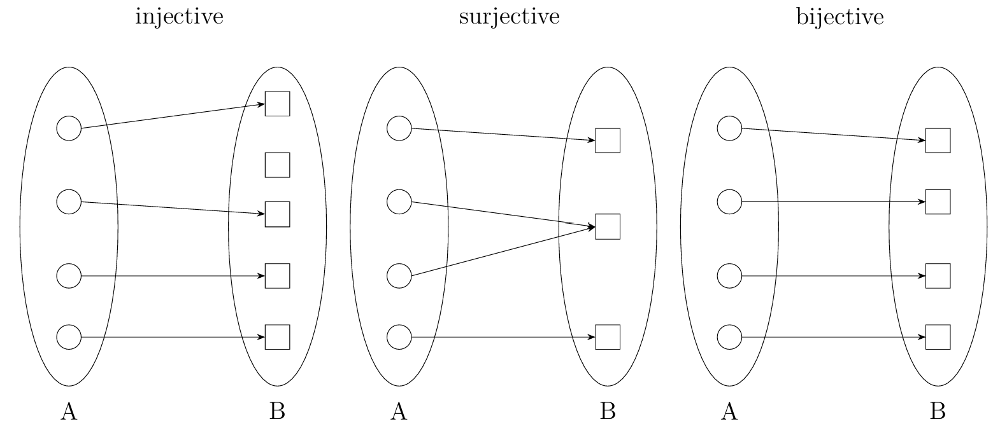

Lecture 1: Basics of Sets#
Warmup#
Answer
6 people! But, think about why.
Sets#
We will start the semester off with some basic set theory so we can establish some important definitions and notation conventions.
We will first assume the existence of a set $U$ called the universe that all sets and elements are contained in.
Definition 1 (Set & Element)
A set is a collection of distinct objects from universe $U$. The objects within the set we call elements.
Notationally, if we have a set $A$ and $x$ is an element in $A$, we write $x\in A$. If $x$ is not in $A$, we write $x\notin A$.
Definition 2 (Multiset)
A multiset is a collection of objects from univeres $U$ where elements can be repeated.
Notationally, if $A$ is a subset of $B$, we write $A\not\subseteq B$.
Example 1
Let the universe $U$ be the English alphabet. Then,
$A={a,b,c,d}$ and $B={a,b,c,d,e}$ are sets while $C={a,a,b,c,d}$ is a multi-set
$A$ is a subset of $U$ ($A\subseteq U$)
$B$ is not a subset of $A$ ($A\not\subseteq B$)
Set Operations#
Definition 3 (Union)
The union of sets $A$ and $B$ is the set of all elements in $A$ or $B$. Notationally, $A\cup B={x\in U: x\in A \text{ or } x \in B}$.
Definition 4 (Intersection)
The intersection of sets $A$ and $B$ is the set of all elements in $A$ and $B$. Notationally, $A\cap B={x\in U: x\in A \text{ and } x\in B}$.
Definition 5 (Complement)
The complement of a set $A$ is the set of all elements in $U$ that are not in $A$. Notationally, $A^C={x\in U: x\notin A}$.
Note that for a universe $U$, $U^C$ is the set ${x\in U: x\notin U }$. This set has no elements! That is, $U^C={}$. This special set with no elements, we call the empty set. We denote the empty set with the Greek symbol $\phi={}$.
Definition 6 (Cartesian Product)
The cartesian product is the set of all ordered pairs $(a,b)$ where $a\in A$ and $b\in B$. Notationally, $A\times B = {(a,b):a\in A~~ b\in B}$
Example 2
Let $U$ be the English alphabet and any combination of letters. Then,
$A={x\in U: x\text{ is a vowel}}$ and $B={x\in U: x\text{ is a consonant}}$ are subsets of $U$ (we will assume “y” is an element of only $B$)
$A\cup B={x\in U:x\text{ is a single letter}}$
$A\cap B=\phi$
$A^C = { x\in U: x\text{ is a consonant or string of letters of length at least 2} }$
$A\times B={(a,b), (a,c),(a,d),(a,f),\dots,(u,x),(u,y),(u,z)}$
Functions#
Definition 7
A function $f:A\to B$ is a relation between sets $A$ and $B$ such that for each $a\in A$ ($a$ in $A$), there is a unique $b\in B$ such that $f(a)=b$.
As an example, consider the function Garrett will apply to this class at the end of the semester: assigning students to grades. It would be impossible for one student to have two grades. This would not be a function. This process is only a function when students have one grade.
{kind=link}

Fig. 1 On left, we have a function. On right, we do not have a function since student A is assigned two grades.#
Certain types of functions have certain properties that we define formally now.
Definition 8
Firstly, a function $f$ is injective if distinct elements in $A$ are mapped to distinct elements in $B$. Secondly, $f$ is surjective if every element in $B$ has at least one element in $A$ that gets mapped to it. Lastly, if $f$ is both injective and surjective, then $f$ is bijective.
{kind=link}

Fig. 2 Examples of each type of function.#
For our purposes, one nice way to think of a function $f:A\to B$ as the placement of a set of objects $A$ into a set of boxes $B$:
If no two objects are placed in the same box, $f$ is injective.
If no box is left empty, $f$ is surjective.
If both occur, $f$ is bijective.
We can use this thinking to phrase the following statements. Let $f:A\to B$ be a function that assigns a set of objects $A$ to be placed into a set of boxes $B$.
$f$ is injective means $f$ ensures no two objects are placed in the same box.
$f$ is surjective means $f$ leaves no box empty.
$f$ is bijective means $f$ leaves no box empty and ensures no two objects are placed in the same box.
The reason we categorize functions this way is because they tell us something about the sizes of sets. Let the number of elements in a set $A$ be denoted $|A|$.
Theorem 1
Again, let $f:A\to B$ as defined above. Then,
If $f$ is injective, $|A|\leq |B|$
If $f$ is surjective, $|A|\geq |B|$
If $f$ is bijective, $|A|=|B|$